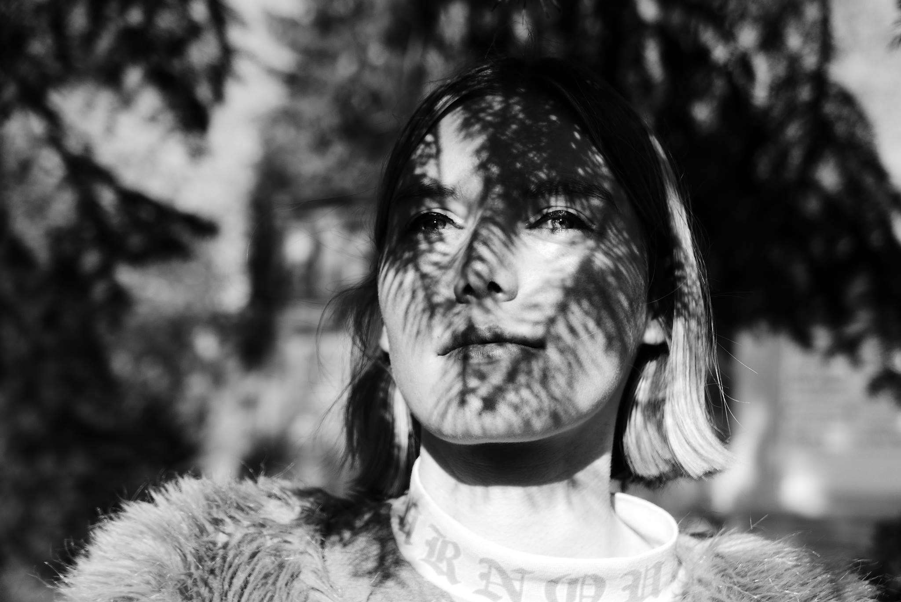

<section class="section">
	<div class="container">
	  <div class="columns">
	  	<div class="column">
	  		
	  		<small>© Giampiero Assumma</small>
	  	</div>
	  	<div class="column">
	  		<h4>French, 1991.</h4>

	  		<h4>Lives and works in Berlin.</h4>


	  		<p>In Roxane Pronier’s paintings, color dominates space, engulfing the audience in a more or less violent way. The colour is not only an instrument but becomes a full subject and encourages a thought process. The squared shape allows her to express colour as a neutral object which is common and pure in a mathematical sense. A shape that can repeat itself endlessly and extend beyond the edges of the painting. By colouring the squared shape, Roxane creates a language without words, a language driven only by intuition and creativity. This simple language easily fits all media and contexts. It speaks of the appropriation and use of the space through detailed and serial work to create a sense of pace and clarity. Her artistic process falls in with constructivism, concrete and cinetic art.</p>

	  		<ul>
	  			<li>2009 Literary preparatory class (cinema and audiovisual option)</li>
	  			<li>2011 Film School</li>
	  			<li>2015 Paris Ateliers (workshops)
	  				<ul>
	  					<li>Byzantine iconography with Gilles Weissmann</li>
	  					<li>Drawing and painting with Mathieu Weiler</li>
	  				</ul>
	  			</li>
	  		</ul>
	  		
	  	</div>
	  </div>
	</div>
</section>